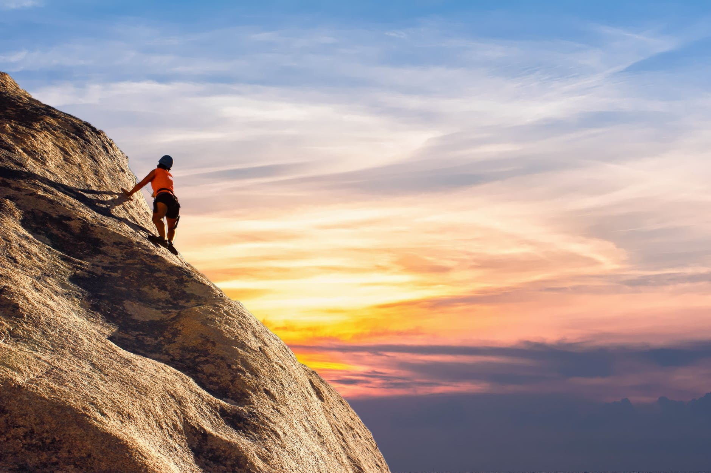
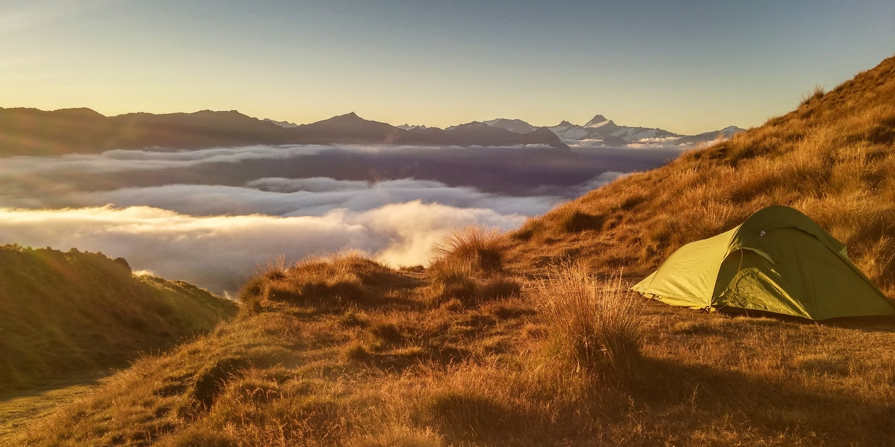

Rock Climbing
Camping
Hiking

Sun protection.
First aid supplies.
Nutrition such as food and lots of water.
Warm jacket, cape town weather is unpredictable.

Table Mountain towers more than a 1 000m above the Mother City. This is South Africa’s most recognised landmark. Greater Cape Town and its southern suburbs nestle against the bulk of the mountain range, which stretches from Signal Hill above Table Bay to Cape Point in the south.
With over 3 000 trad climbing routes on its sheer sandstone cliffs, Table Mountain is a paradise for rock climbers from around the world. It has spectacular routes of varying grades on top quality rock - all set within pristine natural surroundings. The diversity and quality of climbing are on a par with anywhere else in the world. Despite the easy access the routes are uncrowded - even on weekends and public holidays - making the area a favoured destination for overseas visitors.
There are single and multi-pitch routes on the Lower Buttresses - notably the very easy ‘Fraser’s Variation’ and the more challenging ‘Bombay Duck’. However, ‘The Ledge’ is the focal point for rock climbers. Must-dos include the spectacularly exposed but easy ‘Jacobs Ladder’ and harder iconic routes like ‘Atlantic Crag’ and ‘Roulette’.
.png)
Blue Waters Resort is located a mere five-minute walk away from Blue Waters Beach. The resort is also close to Mnandi Beach, which has Blue Flag status. Blue Waters Resort has braai and picnic areas. Guests of the resort can also enjoy extensive birdwatching by taking a trip to the nearby False Bay Ecology Park.
Everyone needs a break from the hustle and bustle of the city once in a while, so pack your bags and explore the Western Cape's beautiful outdoors for some peace and tranquility.
Take your family and head off for a day trip. Enjoy a braai, picnic or an intimate weekend getaway. State-owned resorts and camping sites provide the perfect affordable family holiday at any time of the year. So before you pack your car and head off to a chalet near the sea or pitch your tent in the scenic mountains, have a look at the variety of holiday resorts maintained by government.Whether you prefer a holiday spot that comes with all four walls or an open space under the stars to park your caravan, there are many relaxing options available to cater for your needs.